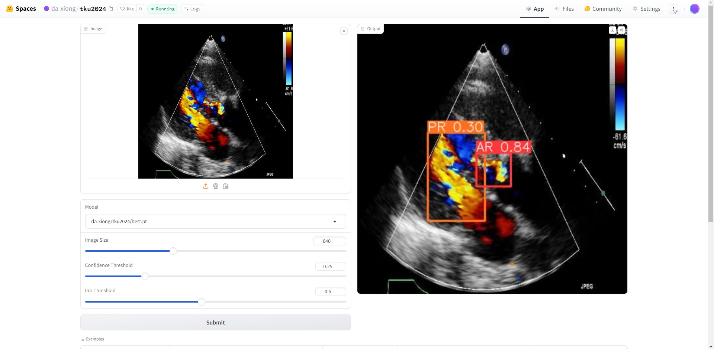

心臟逆流檢測展示請按我
心臟逆流檢測專題介紹PDF檔請按我

點餐機系統
以下是我的專題，是利用JavaScript的React框架所做的點餐機系統，這個點餐機所用到包含了資料庫建置，以及插入messenger快速回覆機器人，
以及悠遊付的行動支付，近年來由於地球環境影響，為了不要過度使用紙張而導致過度開發森林，盡量都把內容資訊化，而我們做點餐機，
只要印出一張QRcode，讓user透過掃描能夠使用自己手機的browser進行點餐，除了減少紙張使用，如果透過行動支付付費，在這疫情肆虐的時代，
也能減少人與人之間的接觸。
點餐機系統展示請按我
點餐機專題介紹PDF檔請按我